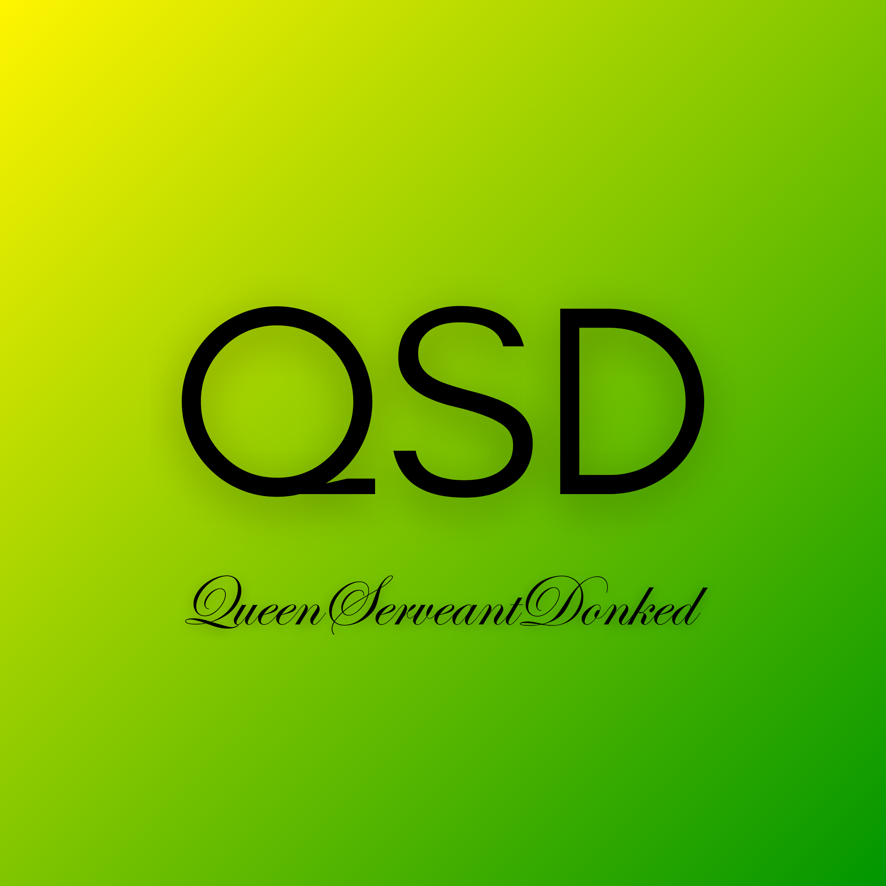

QueenServeantDonked
QueenServeantDonked is a project hosted by producer periyuh, as a social experiment revolving satirical music, experimental sounds and controversial topics, with albums releasing on April Fool’s Day.
QueenServeantDonked is a project hosted by producer periyuh, as a social experiment revolving satirical music, experimental sounds and controversial topics, with albums releasing on April Fool’s Day.

While the website is being worked on, you can check out our new physical releases: